<body color="black">
    
    <link rel="stylesheet" type="text/css" href="style.css">
        <ul class="flex-container">
            <li class="flex-item">GITHUB</li>
            <li class="flex-item">SETTINGS</li>
            <li class="flex-item"></li>
            <li class="flex-item">OTHERS</li>
            <li class="flex-item">OTHERS</li>
        </ul>
        
        <br><br><br><br>

        <!-- Aggiungi il contenitore per Flexbox2 -->
        <div class="flex2-container">
            
            <div class="flex2-itemGrow">
                <table>
                    <tr>
                        <td><h1>PATCHPULSE, YOU WILL <br>FEEL SAFE NOW</h1></td>
                    </tr>
                    <tr>
                        <td>
                            <div class="flex2-container" >
                                <a href="fastScan.php" class="">Fast Scan</a>
                                <a href="" class="">Slow Scan</a>
                            </div>
                        </td>
                    </tr>
                </table>
            </div>
            
        </div>

</body>
